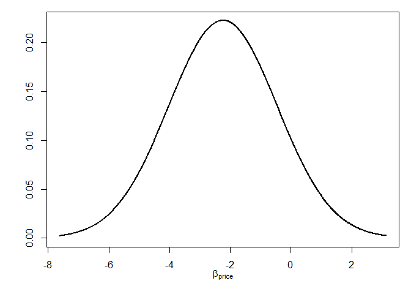

The goal of RprobitB is to fit mixed probit models to choice data. The package differs from comparable packages in two ways: Bayesian estimation and a focus on taste heterogeneity.
Installation
You can install the released version of RprobitB from CRAN with:
install.packages("RprobitB")And the development version from GitHub with:
# install.packages("devtools")
devtools::install_github("loelschlaeger/RprobitB")Example
This is a basic example to show how to fit a mixed probit model and make choice predictions:
First, load the package.
library(RprobitB)
#> Thanks for using RprobitB 1.0.0.9000, happy choice modeling!
#> See https://loelschlaeger.de/RprobitB for help.
#> Type 'citation("RprobitB")' for citing this R package.Then, prepare choice data, for example the Train dataset from the mlogit package.
data("Train", package = "mlogit")
data <- prepare_data(
form = choice ~ price | 0 | time + comfort + change,
choice_data = Train,
re = "price",
standardize = "all")We split the dataset into a train (70%) and test subset (30%).
data <- train_test(data, test_proportion = 0.3)Call the mcmc function to estimate the model.
model <- mcmc(data$train)
#> Iteration Info ETA (min)
#> 0 started Gibbs sampling
#> 1000 2
#> 2000 2
#> 3000 2
#> 4000 2
#> 5000 1
#> 6000 1
#> 7000 1
#> 8000 1
#> 9000 1
#> 10000 done, total time: 2 minThe summary method gives an overview over the estimates.
summary(model)
#> Probit model 'choice ~ price | 0 | time + comfort + change'.
#>
#> MCMC settings:
#> - R: 10000
#> - B: 5000
#> - Q: 1
#>
#> Normalization:
#> - Level: Utility differences with respect to alternative 2.
#> - Scale: Coefficient of the 1. error term variance in Sigma fixed to 1.
#>
#> Legend of alternatives:
#> name
#> 1 A
#> 2 B
#>
#> Legend of linear coefficients:
#> name re
#> 1 time_A FALSE
#> 2 time_B FALSE
#> 3 comfort_A FALSE
#> 4 comfort_B FALSE
#> 5 change_A FALSE
#> 6 change_B FALSE
#> 7 price TRUE
#>
#> Latent classes: 1
#> - Update: FALSE
#>
#> Parameter statistics:
#> mean sd R^
#> alpha
#>
#> 1 -0.82 0.08 1.02
#> 2 -0.85 0.08 1.01
#> 3 -0.52 0.05 1.01
#> 4 -0.50 0.05 1.00
#> 5 -0.26 0.05 1.01
#> 6 -0.21 0.05 1.00
#>
#> s
#>
#> 1 1.00 0.00 NaN
#>
#> b
#>
#> 1.1 -2.19 0.26 1.02
#>
#> Omega
#>
#> 1.1,1 3.10 0.87 1.01
#>
#> Sigma
#>
#> 1,1 1.00 0.00 1.00Let’s visualize the estimated mixture distribution for the price coefficient.
plot(model, type = "mixture")
The predict function makes choice predictions and compares the prediction to the actual choices.
predict(model, data$test)
#> predicted
#> true A B
#> A 299 127
#> B 144 304